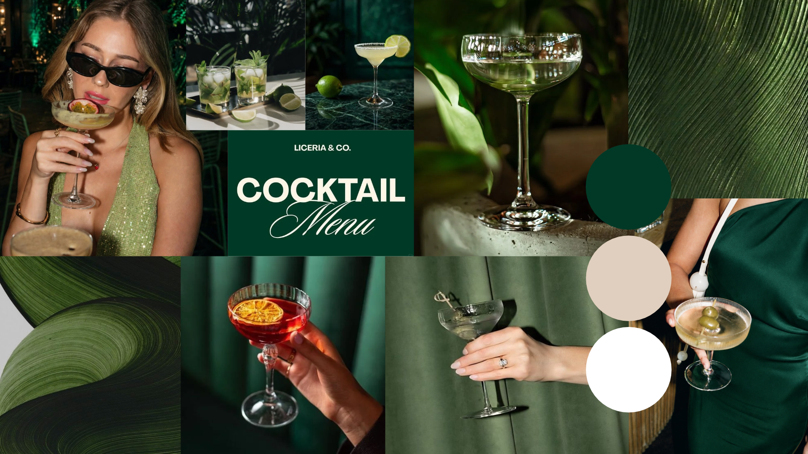
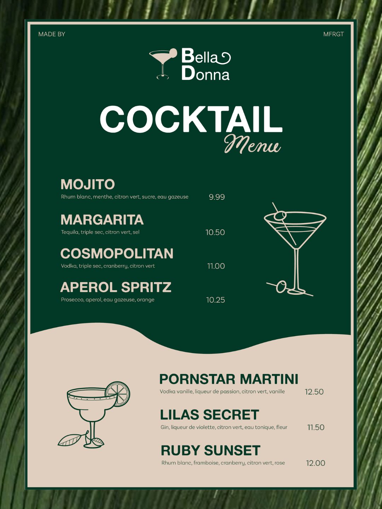
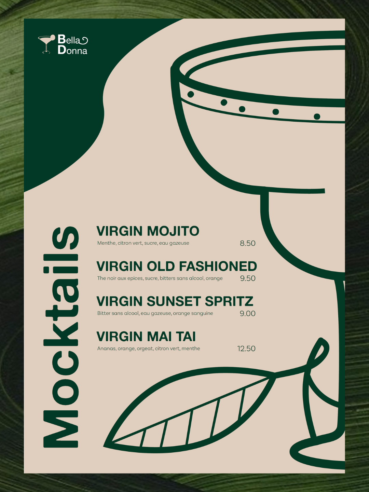
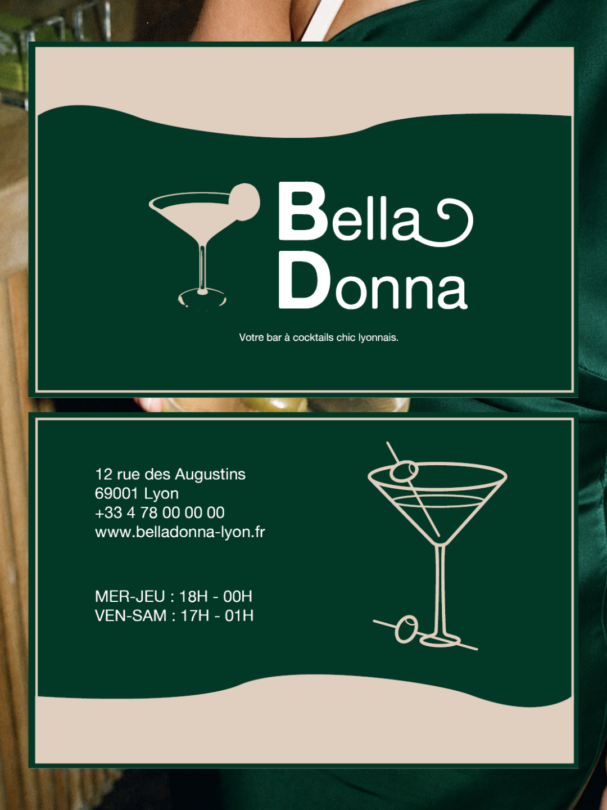
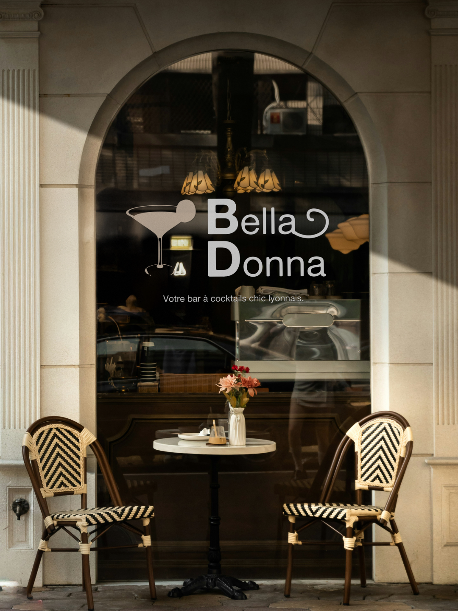
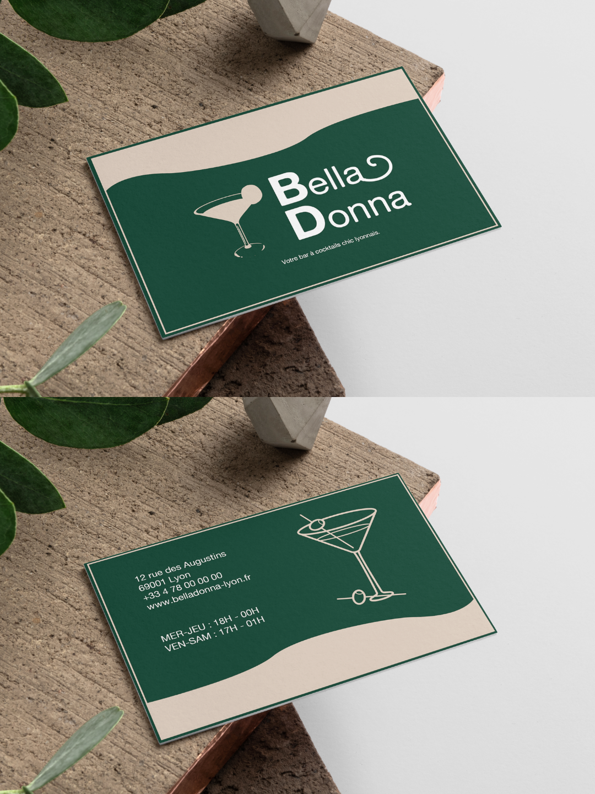
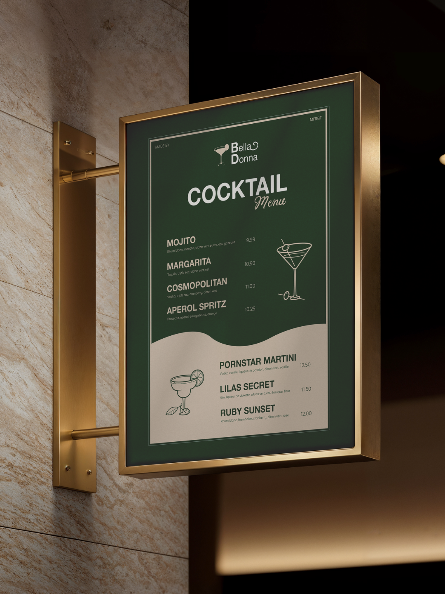

Contexte de création ✧˖°.
‧˚ʚ A travers ce petit concept fictif, j'ai réalisé une identité visuelle pour "Bella Donna", un bar à cocktails chic et haut de game fictif. Je suis aller de la création du logo jusqu'à la déclinaison sur différents supports (menu, cartes de visite, devanture).
‧˚ʚ Ce projet m'a permis de comprendre comment décliner une identité graphique sur plusieurs formats différents tout en gardant une cohérence visuelle forte.
Démarche & Réalisation ✧˖°.
‧˚ʚ Pour donner vie à l'identité visuelle de ce bar, j'ai d'abord fait des recherches approfondies sur Pinterest, afin de voir dans quelle DA je voulais m'orienter. En créant un moodboard, j'ai pu poser l'ambiance globale du lieu en combinant du vert forêt avec du beige très clair chaleureux pour capter l'esprit bar à cocktails haut de game.
‧˚ʚ Une fois cet univers défini, j'ai conçu le logo sur Illustrator, puis j'ai réalisé la mise en page du menu et de la carte sur InDesign, en accordant une attention particulière à la hiérarchie des informations pour rendre la lecture fluide. Enfin, j'ai crée des mockups réalistes de mes créations sur Photoshop pour présenter le projet en situation.
Rendus ✧˖°.

Moodboard avec toutes mes
inspirations. J'ai décidé de partir vers un combo de couleurs vert et beige pour donner une
ambiance à la fois très épurée, chic et raffinée, ce qui colle parfaitement à l'univers d'un bar
à cocktails.
Utilisation de Canva.
Logo réalisé pour le bar à cocktails. Utilisation de Adobe Illustrator.

Menu des cocktails du bar.
Celui-ci est sur un fond associant du vert forêt et du beige. L'ensemble est mis en valeur par
des illustrations graphiques de cocktails épurées.
Utilisation de Adobe Indesign.

Menu des mocktails du bar.
Celui-ci est sur un fond beige avec des détails vert forêt. L'ensemble est mis en valeur par
le titre "Mocktails" incliné à gauche et l'illustration graphique du cocktail en gros à droite.
Utilisation de Adobe Indesign.

Carte de visite du bar à
cocktails recto/verso. Celle-ci présente un design épuré sur fond beige encadré de vert foncé,
mettant en valeur le logo principal et le slogan de l'établissement. Sur l'autre face, on
retrouve un fond vert affichant les informations pratiques et les horaires du bar aux côtés
d'une illustration élégante d'un verre de cocktail épuré.
Utilisation de Adobe Indesign.



Mockups réalistes de la devanture du bar, de sa carte de visite recto/verso et de son menu. Utilisation d'Adobe Photoshop.